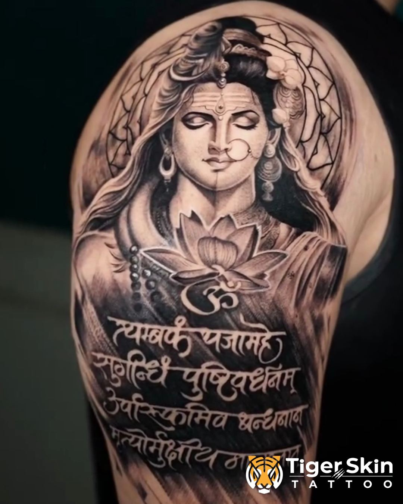
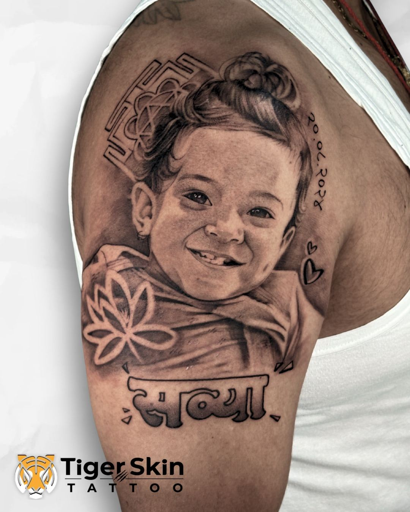
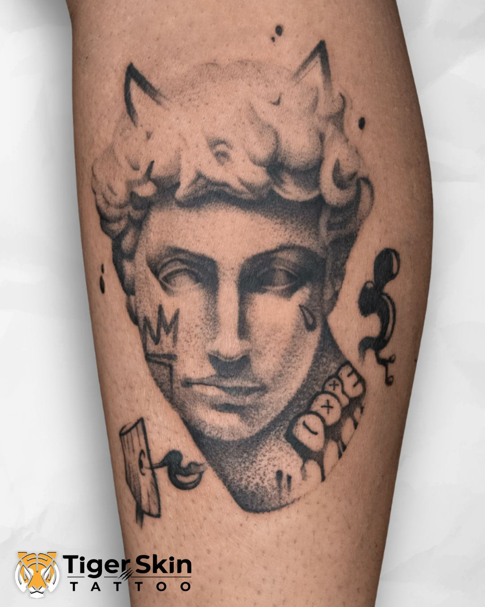

Realism Tattoo Studio · Naupada, Thane
Realism Tattoo Studio · Naupada, Thane
Realism tattoos
in Thane.
Hyper-realism, black & grey and colour realism — every piece custom-sketched from scratch by Swarain Pawar at Tiger Skin Tattoos, Naupada, Thane West.
Realism Tattoo Studio · Naupada, Thane
Hyper-realism, black & grey and colour realism — every piece custom-sketched from scratch by Swarain Pawar at Tiger Skin Tattoos, Naupada, Thane West.
Realism tattooing is the most technically demanding style in the craft. The goal is to create an image that looks three-dimensional on your skin — accurate depth, shadow, highlight and texture that make the subject appear real at a glance.
At Tiger Skin Tattoos, Swarain Pawar trained specifically in this discipline at Circle Tattoo, one of India's most respected realism studios. Every realism piece here starts from a custom drawing — not a reference image dropped directly onto your skin, but a considered composition planned specifically for the placement on your body.
The result heals sharp, fades cleanly, and still looks powerful 10 years from now.
Faces, people, meaningful figures — captured with the depth and emotion they deserve. The most personal tattoo you can wear.
Lions, tigers, wolves, birds — rendered with the texture and life of the real thing. Big, bold pieces that demand attention.
The most timeless approach. Deep blacks, precise gradients, and fine-detail linework that ages exceptionally well.
Every piece below was custom-designed for the client wearing it.



Swarain trained at Circle Tattoo — one of India's leading realism studios. This isn't a side skill, it's the foundation of everything done here.
Every realism piece is drawn from scratch for your body. Placement, scale, composition — all planned before a single needle touches your skin.
Realism done right ages cleanly. We plan for how the skin heals so the detail and depth still read clearly years down the line.
Located in Naupada, Thane West — accessible from across the Mumbai metro. Appointment-only for dedicated session time.
Realism tattoos start from ₹2,000 for smaller pieces (under 2 inches). We charge ₹1,000 per square inch — realism requires more time and precision than simpler styles, so larger pieces are priced accordingly. Full day sessions are ₹30,000–35,000. Get an accurate quote at your free consultation.
It depends entirely on size and complexity. Small realism pieces (under 3 inches) can be done in 3–4 hours. Detailed portrait work or larger compositions typically require multiple sessions of 5–8 hours each. We plan the sessions to protect the quality.
High resolution, good natural lighting, and sharp focus. Avoid strong filters, shadows across the subject's face, or overly processed images. The better the reference, the better the final tattoo — we'll guide you on what to bring when you book.
Yes, with proper technique. Black & grey realism works beautifully on all skin tones. Colour realism requires more planning on darker skin to ensure the pigments show correctly — this is something we assess in your consultation.
Tell us what you want to capture — a person, a moment, an animal. Consultations are free. The fastest path is a call or WhatsApp.